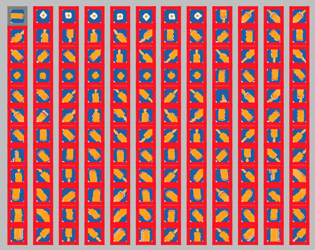

Grasping and Manipulation
Overview

Traditionally, the problem of robotic grasping and manipulation has been formalized under the assumption of perfect knowledge on the object, robot hand and their relative pose. Simplifying assumptions were made on contact models, hand kinematics and capabilities or the structure of the environment. While this allows elegant solutions to multi-contact planning, many of these assumptions do not translate well into the real world that is riddled by uncertainty.
We have worked on the problem of how a robot can learn how to grasp when only partial and noisy information is available on the object, robot hand and their relative pose. We proposed different feature representations, learning mechanisms and training data.
We have also worked on the problem of planning more complex manipulation sequences under uncertainty. We proposed different optimization and learning approaches as well as combinations of those with applications to manipulating rigid and deformable objects, in-hand or non-prehensile.
Check out the papers below on different proposals for feature representations, learning mechanisms and training data.
Read more about approaches towards Learning to Grasp in this comprehensive survey!
2020
Migimatsu, T., Bohg, J. Object-Centric Task and Motion Planning in Dynamic Environments Submitted to IEEE Robotics and Automation Letters with ICRA option. 2020.
Alina Kloss and Maria Bauza and Jiajun Wu and Joshua B. Tenenbaum and Alberto Rodriguez and Jeannette Bohg. Accurate Vision-based Manipulation through Contact Reasoning Submitted to ICRA. 2020.
Li, T., Srinivasan, K., Meng, M., Yuan, W., Bohg, J. Learning Hierarchical Control for Robust In-Hand Manipulation. Submitted to ICRA. 2020.
Yan, M., Zhu, Y., Jin, N., Bohg, J. Self-Supervised Learning of State Estimation for Manipulating Deformable Linear Objects Submitted to IEEE Robotics and Automation Letters with ICRA option. 2020.
Kokic, M., Kragic, D., Bohg, J. Learning Task-Oriented Grasping from Human Activity Datasets. Submitted to IEEE Robotics and Automation Letters with ICRA option. 2020.
Shao, L., Ferreira, F., Jorda, M., Nambiar, V., Luo, J., Solowjow, E., Aparicio Ojea, J., Khatib, O., Bohg, J. UniGrasp: Learning a Unified Model to Grasp with N-Fingered Robotic Hands Submitted to IEEE Robotics and Automation Letters with ICRA option. 2020.
2019
Kokic, M., Kragic, D., Bohg, J. Learning to Estimate Pose and Shape of Hand-Held Objects from RGB Images. October. IROS 2019.
Carlos Rubert, Daniel Kappler, Jeannette Bohg and Antonio Morales. Predicting grasp success in the real world - A study of quality metrics and human assessment. Robotics and Autonomous Systems. Volume 121, November 2019.
Merzic, H., Bogdanovic, M., Kappler, D., Righetti, L. , Bohg, J. Leveraging Contact Forces for Learning to Grasp. ICRA '19.
2017
Rubert, C., Kappler, D., Morales, A., Schaal, S., Bohg, J. On the relevance of grasp metrics for predicting grasp success In Proceedings of the IEEE/RSJ International Conference of Intelligent Robots and Systems, September 2017.
2016
Kappler, D., Schaal, S., Bohg, J. Optimizing for what matters: the Top Grasp Hypothesis In Proceedings of the IEEE International Conference on Robotics and Automation (ICRA) 2016, IEEE, IEEE International Conference on Robotics and Automation, May 2016.
Bohg, J., Kappler, D., Schaal, S. Exemplar-based Prediction of Object Properties from Local Shape Similarity In Proceedings of the IEEE International Conference on Robotics and Automation (ICRA) 2016, IEEE, IEEE International Conference on Robotics and Automation, May 2016.
2015
Kappler, D., Bohg, B., Schaal, S. Leveraging Big Data for Grasp Planning In Proceedings of the IEEE International Conference on Robotics and Automation, May 2015.
2014
Herzog, A., Pastor, P., Kalakrishnan, M., Righetti, L., Bohg, J., Asfour, T., Schaal, S. Learning of Grasp Selection based on Shape-Templates Autonomous Robots, 36(1-2):51-65, Springer US, January 2014.
Bohg, J., Morales, A., Asfour, T., Kragic, D. Data-Driven Grasp Synthesis - A Survey IEEE Transactions on Robotics, 30, pages: 289 - 309, IEEE, April 2014.
2012
Bohg, Jeannette, Welke, Kai, León, Beatriz, Do, Martin, Song, Dan, Wohlkinger, Walter, Aldoma, Aitor, Madry, Marianna, Przybylski, Markus, Asfour, Tamim, Marti, Higinio, Kragic, Danica, Morales, Antonio, Vincze, Markus Task-Based Grasp Adaptation on a Humanoid Robot In 10th IFAC Symposium on Robot Control, SyRoCo 2012, Dubrovnik, Croatia, September 5-7, 2012., pages: 779-786, 2012.
2011
Bohg, J., Johnson-Roberson, M., Leon, B., Felip, J., Gratal, X., Bergstrom, N., Kragic, D., Morales, A. Mind the gap - robotic grasping under incomplete observation In Robotics and Automation (ICRA), 2011 IEEE International Conference on, pages: 686-693, May 2011.
2010
Bohg, J., Kragic, D. Learning Grasping Points with Shape Context Robotics and Autonomous Systems, 58(4):362-377, North-Holland Publishing Co., Amsterdam, The Netherlands, The Netherlands, April 2010.
León, B., Ulbrich, S., Diankov, R., Puche, G., Przybylski, M., Morales, A., Asfour, T., Moisio, S., Bohg, J. Kuffner, J., Dillmann, R. OpenGRASP: A Toolkit for Robot Grasping Simulation In SIMPAR 2010: Simulation, Modeling, and Programming for Autonomous Robots , pages: 109-120, 2010. Best Paper Award.
2009
Bohg, J., Barck-Holst, C., Huebner, K., Ralph, M., Rasolzadeh, B., Song, D., Kragic, D. Towards Grasp-Oriented Visual Perception of Humanoid Robots International Journal of Humanoid Robotics, 06(03):387-434, 2009.
Bohg, J., Kragic, D. Grasping familiar objects using shape context In Advanced Robotics, 2009. ICAR 2009. International Conference on, pages: 1-6, 2009.
Bergström, N., Bohg, J., Kragic, D. Integration of Visual Cues for Robotic Grasping In Computer Vision Systems, 5815, pages: 245-254, Lecture Notes in Computer Science, Springer Berlin Heidelberg, 2009.